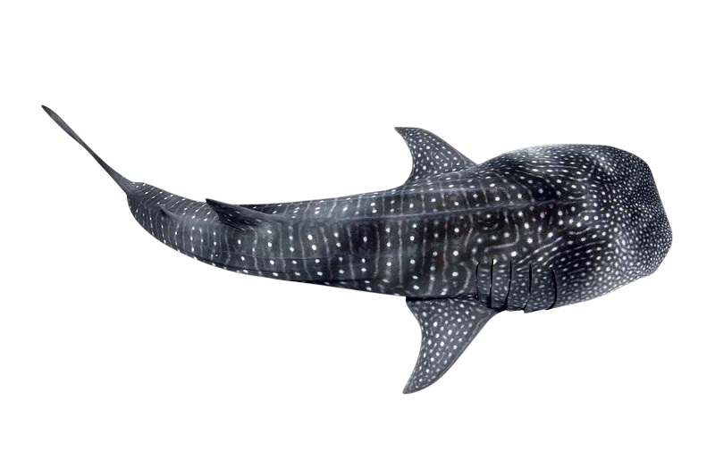

Fish Population Dashboard, Scroll for photos of silly fish!!!!
Q&A Section
Suggest an Improvement
Some facts about Marine Fish that you may find interesting.
Many marine fish follow the Temperature-Size Rule, which states that individuals tend to grow to smaller adult sizes in warmer waters and larger sizes in cooler waters.
In regions with high water pollution and rising temperatures (e.g., Southeast Asia, Gulf of Mexico), fish tend to be smaller due to increased stress, oxygen depletion, and toxin accumulation.
